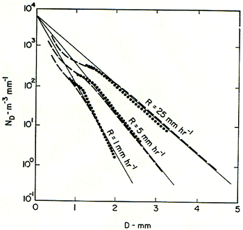
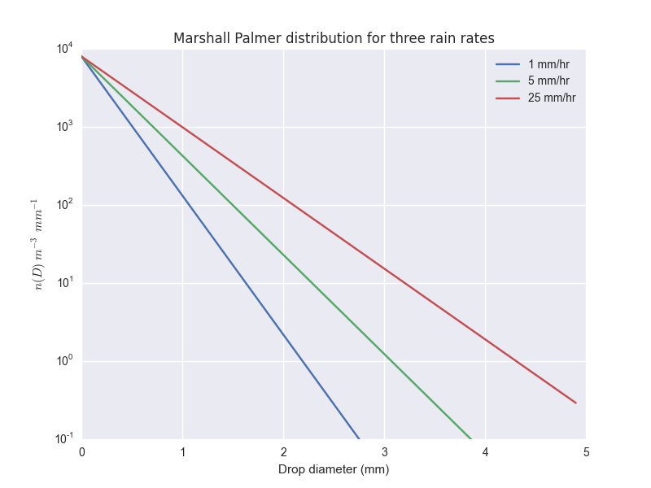

11.6. Notes on the Marshall-Palmer distribution and the Z-RR relation¶
Reading: Stull chapter 8, pages 245 - 248 on radar reflectivity rain rate and bright band.
A brief backgrounder in where Stull gets his equation 8.30 on page 247:
This equation works because the collision/coalescence process for rain formation produces a remarkably regular distribution of droplet sizes for different rainrates, essentially “fingerprinting” the rain rate with its drop-size distribution, which produces a unique value of the radar reflectivity.
In 1947 Marshall and Palmer published their measurements of rain drop size as a function of rain rate:
These results are well fit by this equation:
where \(\Lambda=4.1 RR^{-0.21}\) with D in mm, \(N_D\) in \(m^{-3}\,mm^{-1}\) and RR in \(mm/hr\)
I’ve put this equation into the following function in marshall_palmer.py:
def marshall_dist(Dvec,RR):
"""
Calcuate the Marshall Palmer drop size distribution
Input: Dvec: vector of diameters in mm
RR: rain rate in mm/hr
output: n(Dvec), length of Dvec, in m^{-3} mm^{-1}
"""
N0=8000 #m^{-3} mm^{-1}
the_lambda= 4.1*RR**(-0.21)
output=N0*np.exp(-the_lambda*Dvec)
return output
You can run it using its main function:
import a301_lib
from sat_lib.utils.marshall_palmer import main
main()
and should see the following plot:
{kind=link}
Here’s a 2009 paper that presents the current leading contender for why the drop-size distribution behaves this way:
Single-drop fragmentation determines size distribution of raindrops
Basically: large drops, formed by collision coallescence are unstable bags of water that split into smaller drops with this size distribution.
11.6.1. Radar problem:¶
Hand in a png file/scan plus a notebook that does the following:
Integrate \(Z=\int D^6 n(D) dD\) on paper, assuming a Marshall Palmer size distribution and show that it integrates to:
\[Z \approx 300 RR^{1.5}\]with Z in \(mm^6\,m^{-3}\) and RR in mm/hr. It’s helpful to know that:
\[\int^\infty_0 x^n \exp( -a x) dx = n! / a^{n+1}\]Repeat using numerical integration in python (i.e. np.diff and np.sum) and show that the the result agrees.